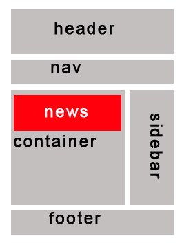

今天的任务主要是把那个静态页面写完，目前只是把body里的html文档剥离出来，现在要先把语义化标签套上去（昨天的jQueryMobile里的页面也用到了语义化标签，大致结构是这样的：
- 这是HTML5以前的divClass分类：
- sidebar:
- news:
- nav:
- main:
- header:
- footer:
- container:
- 这是HTML5中的大块分类：
- header: 定义 section 或 page 的页眉。
- foot: 定义 section 或 page 的页脚。
- section: 定义 section 节/段。
- article: 定义文章主体。
- aside: 定义页面内容之外的内容。
- details: 定义元素的细节。
- summary: 为 details 元素定义可见的标题。
- dialog: 定义对话框或窗口。
- nav: 定义导航连接
然后上一段我就遇到了一个问题：就是当我使用 p ul 或者 p > ul 时没法给 ul 指定背景颜色 background-color,而单独时则可以，这是为什么呢...还有这两个选择器的区别在哪里？p ul 是后代选择器，不管层次有多深都能被选上，而 p > ul 是子孙选择器，只能选择父元素为 p 的 ul。所以在 p 里面的 ul 是无论如何都不会被选中的，这是块级元素间的无法包含的现象吗？（笑~）刚刚查了查百度，块级元素里面是可以包含块级元素的，所以应该是个 bug ，不过我现在还没有办法解决他。所以我现在想出来的解决思路就是将文档放在 div 里，文字模块用 p 元素包裹起来，也可以不用。接下来我要总结一下常用块级和行内元素，并且梳理一下常用的css属性...不然做起来一头雾水
- 在做页面布局的时候,一般会将html元素分为两种，即块级元素和行内元素。
- 块级元素：block element 每个块级元素默认占一行高度，一行内添加一个块级元素后无法一般无法添加其他元素（float浮动后除外）。两个块级元素连续编辑时，会在页面自动换行显示。块级元素一般可嵌套块级元素或行内元素；块级元素一般作为容器出现，用来组织结构，但并不全是如此。有些块级元素，如 form 只能包含块级元素。其他的块级元素则可以包含 行级元素如 p .也有一些则既可以包含块级，也可以包含行级元素。 div 是最常用的块级元素，元素样式的 display: block 都是块级元素。它们总是以一个块的形式表现出来，并且跟同级的兄弟块依次竖直排列，左右撑满。
- 行内元素：inline element 也叫内联元素、内嵌元素等；行内元素一般都是基于语义级(semantic)的基本元素，只能容纳文本或其他内联元素，常见内联元素 “a”。比如 SPAN 元素，IFRAME 元素和元素样式的 display: inline 的都是行内元素。例如文字这类元素，各个字之间横向排列，到最右端自动折行。
-
- block（块）元素的特点
- 总是在新行上开始；
- 高度，行高以及外边距和内边距都可控制；
- 宽度缺省是它的容器的100%，除非设定一个宽度。
- 它可以容纳内联元素和其他块元素
-
- inline元素的特点
- 和其他元素都在一行上；
- 高，行高及外边距和内边距不可改变；
- 宽度就是它的文字或图片的宽度，不可改变
- 内联元素只能容纳文本或者其他内联元素
- 对行内元素，需要注意如下
- 设置宽度width 无效。
- 设置高度height 无效，可以通过line-height来设置。
- 设置margin 只有左右margin有效，上下无效。
- 设置padding 只有左右padding有效，上下则无效。注意元素范围是增大了，但是对元素周围的内容是没影响的。
-
- 常见的块状元素
- address – 地址
- blockquote – 块引用
- div – 常用块级容易，也是CSS layout的主要标签
- h1~h6 – 标题
- p – 段落
- pre – 格式化文本
- table – 表格
- ol – 有序表单、ul – 无序列表、dl – 定义列表
-
- 常见的内联元素
- a – 锚点abbr – 缩写acronym – 首字bdo – bidi overridebig – 大字体br – 换行cite – 引用code – 计算机代码(在引用源码的时候需要)dfn – 定义字段em – 强调i – 斜体img – 图片input – 输入框kbd – 定义键盘文本label – 表格标签q – 短引用samp – 定义范例计算机代码select – 项目选择small – 小字体文本span – 常用内联容器，定义文本内区块strike – 中划线strong – 粗体强调sub – 下标sup – 上标textarea – 多行文本输入框tt – 电传文本u – 下划线
-
- 行内元素与块级元素有什么不同？
-
- 区别一：
- 块级：块级元素会独占一行，默认情况下宽度自动填满其父元素宽度
- 行内：行内元素不会独占一行，相邻的行内元素会排在同一行。其宽度随内容的变化而变化。
-
- 区别二：
- 块级：块级元素可以设置宽高
- 行内：行内元素不可以设置宽高
-
- 区别三：
- 块级：块级元素可以设置margin，padding
- 行内：行内元素水平方向的margin-left; margin-right; padding-left; padding-right;可以生效。但是竖直方向的margin-bottom; margin-top; padding-top; padding-bottom;却不能生效。
-
- 区别四：
- 块级：display:block;
- 行内：display:inline;
- 可以通过修改display属性来切换块级元素和行内元素
-
- p中禁止包含任何块级元素！应该使用<div><p></p><块级元素></块级元素></div>这样的包含属性